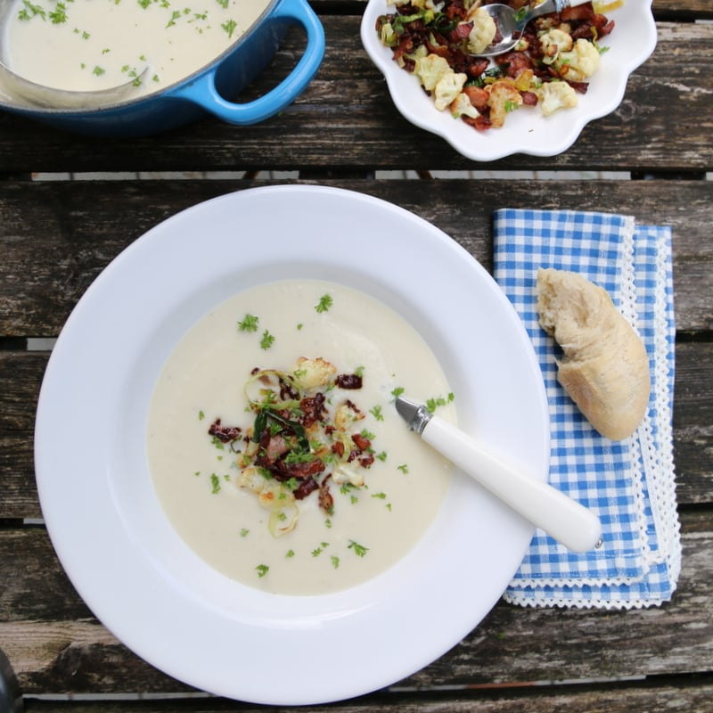

Blomkalsuppe

Blomkalsuppe
Description
Here is an easy recipe for a busy day, deliscious creamy soup with bacon.
Let's jump right in!
Ingredients
- 2stk Blomkal
- Half Purre
- 1 ss Tine Smor
- 1l Helmelk
- 3dl Honsebuljong
- Half ts Salt
- Quar ts Pepper
Steps
- Del blomkal i sma biter og purre i skiver. Fres i en stor gryte med smor i 5 minutter.
- Hell i melk og buljong og kok til blomkalen er mor, ca. 20 minutter.
- Fisk ut noen fine blomkalbiter til garnityr og kjor suppen glatt med en stavmikser eller i en blender.
- Smak til med salt og pepper og server med brod og smor.